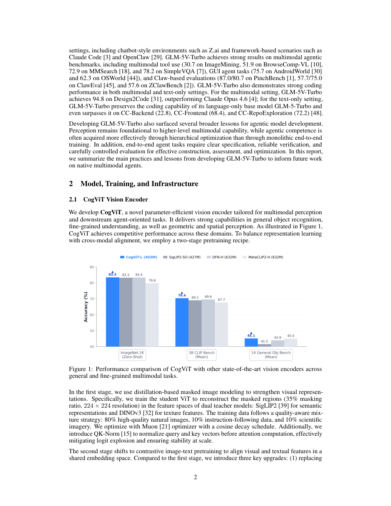

#1
★ 7/10
GLM-5V-Turbo: Toward a Native Foundation Model for Multimodal Agents
GLM-5V-Turbo：面向多模态智能体的原生基础模型

图 Figure · Page 2 of paper
🎯 原生融合多模态感知与推理规划的智能体基础模型
GLM-5V-Turbo integrates multimodal perception natively into reasoning and agent execution, not just as an add-on.
| 维度 | 中文 | English |
|---|---|---|
| ❓ 待解决 的问题 |
目前大多数基础模型把视觉能力当作语言模型的"附加插件"，而非核心组成部分，导致模型在处理图像、GUI界面、文档、视频等真实复杂环境时推理能力受限。AI智能体在现实中需要跨模态感知与执行，但现有架构很难做到原生的多模态融合。如何让多模态感知与语言推理、规划、工具调用无缝结合，是核心挑战。 | Most current foundation models treat vision as a bolt-on feature added to a language backbone, which limits their ability to truly reason over images, GUIs, documents, and videos in real-world agentic settings. As AI agents are deployed in complex environments, they need to seamlessly perceive and act across heterogeneous modalities — something existing architectures struggle to do natively. The challenge is building a model where multimodal understanding is a first-class citizen alongside language reasoning, planning, and tool use. |
| 💡 解决 的亮点 |
• **原生多模态架构**：多模态感知被设计为推理与规划的核心组件，而非辅助接口，实现真正的跨模态智能体行为。 • **层次化优化策略**：采用多模态预训练→监督微调→强化学习的分阶段训练流程，逐步提升智能体能力。 • **工具链与框架扩展**：与智能体框架深度集成，支持视觉工具调用、多模态代码生成和端到端GUI交互。 • **可靠的端到端验证**：强调可验证的智能体流水线，确保复杂多步骤任务的输出可被有效校验。 | • **Native Multimodal Integration**: Multimodal perception is architected as a core component of reasoning and planning — not an auxiliary interface — enabling true cross-modal agent behavior. • **Hierarchical Optimization**: A staged training pipeline combining multimodal pre-training, supervised fine-tuning, and reinforcement learning is used to progressively sharpen agent capabilities. • **Toolchain & Framework Expansion**: The model is tightly integrated with agent frameworks and extended tool libraries, supporting visual tool use, multimodal coding, and end-to-end GUI interaction. • **Reliable End-to-End Verification**: Emphasis on verifiable agent pipelines ensures that outputs can be validated across complex multi-step agentic tasks. |
| 🧪 实验 内容 |
GLM-5V-Turbo在覆盖GUI交互、视觉工具调用、多模态代码生成和框架型智能体任务的多个基准上进行了评测。基线模型包括GPT-4o、Claude、Gemini等前沿闭源模型及主流开源多模态模型。评测同时涵盖纯文本编程基准（验证无性能退化）以及专为智能体场景设计的多模态基准，包括网页导航和文档理解任务。 | GLM-5V-Turbo was evaluated on a range of multimodal agent benchmarks covering GUI interaction, visual tool use, multimodal coding, and framework-based agentic tasks. Baselines include leading frontier models such as GPT-4o, Claude, and Gemini variants, as well as open-source multimodal models. Evaluations span both text-only coding benchmarks (to ensure no regression) and multimodal benchmarks specifically designed for agentic settings, including web navigation and document understanding tasks. |
| 📊 实验 结果 |
作为技术报告，GLM-5V-Turbo在多模态代码生成、视觉工具调用和框架型智能体任务中表现优异，在多个智能体基准上与GPT-4o级别模型持平甚至更优。关键亮点是纯文本编程得分未出现下滑，证明原生多模态融合不会损伤语言能力。在GUI智能体评测和多模态框架任务中均取得领先成绩，模型定位为可实际部署的系统而非研究原型。（具体数字未在摘要中披露，详见正文基准表格。） | While the paper is a technical report without exhaustive ablation tables, GLM-5V-Turbo is reported to achieve strong performance in multimodal coding, visual tool use, and framework-based agentic tasks, competitive with or surpassing GPT-4o-level models on several agent benchmarks. Importantly, it retains competitive text-only coding scores, demonstrating that native multimodal integration does not degrade language-only capabilities. Specific benchmark results include top-tier performance on GUI agent evaluations and multimodal agentic framework tasks, with the model positioned as a practical deployment-ready system rather than a research prototype. |
| 🏁 结论 | GLM-5V-Turbo证明，将多模态感知原生融入基础模型核心（而非附加模块）能显著增强GUI交互、代码生成和工具调用等智能体能力。本文为构建多模态智能体确立了实践原则：多模态感知优先、层次化优化、端到端可验证流水线。 | GLM-5V-Turbo demonstrates that natively integrating multimodal perception into the core of a foundation model — rather than appending it as an auxiliary module — yields significantly stronger agentic capabilities across GUI, coding, and tool-use tasks. The work establishes practical principles for building multimodal agents: multimodal perception as a first-class component, hierarchical optimization, and end-to-end verifiable pipelines. |
| 🔗 论文 链接 |
arXiv: 2604.26752v1 · 📥 PDF | |
⚙️ Method · 方法详解
GLM-5V-Turbo将多模态感知（图像、视频、GUI、文档、网页）直接嵌入模型的推理与规划模块，而非作为上游预处理器。训练流程采用层次化优化：首先通过大规模多模态预训练建立感知基础，再用监督微调对齐智能体任务，最后用强化学习强化在智能体场景下的决策能力。工具链扩展加入视觉工具支持，并与智能体执行框架深度集成，支持任务完成的端到端验证。代码生成、规划、工具调用与GUI交互均在统一的多模态上下文中运行。
GLM-5V-Turbo is designed so that multimodal perception — processing images, videos, GUIs, documents, and webpages — is embedded directly into the model's reasoning and planning modules rather than treated as an upstream preprocessor. The training pipeline follows a hierarchical optimization strategy: first, broad multimodal pre-training builds perceptual grounding; then supervised fine-tuning aligns the model to agent tasks; finally, reinforcement learning sharpens decision-making in agentic contexts. The toolchain is expanded to include visual tools, and the model is integrated with agent execution frameworks that support end-to-end verification of task completion. This design ensures that coding, planning, tool invocation, and GUI interaction all operate within a unified multimodal context.
🌟 Why It Matters · 为什么重要
随着AI智能体从实验室走向现实世界——操控浏览器、在视觉上下文中编写代码、与GUI交互——多模态感知的架构集成方式变得至关重要。GLM-5V-Turbo提供了一个已落地的具体案例和可复现的方法论，证明原生多模态设计在智能体任务上优于主流的"视觉插件"范式。
As AI agents move from controlled benchmarks into real-world deployment — navigating browsers, writing code with visual context, operating GUIs — the architectural choice of how multimodal perception is integrated becomes critical. GLM-5V-Turbo offers a concrete, deployed example and a replicable recipe showing that native multimodal design outperforms the prevailing "vision as add-on" paradigm for agentic tasks.